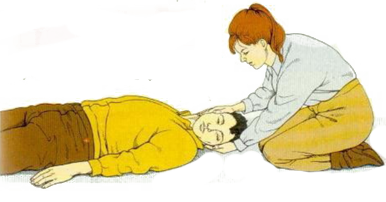
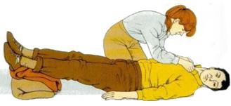

الدورة الدموية
-
الصدمة
الاعراض والعلامات
- يصبح المصاب شاحباً او رمادي واوضح ما يكون ذالك في القسم الداخلي من الشفاه
- يبرد الجلد ويكون رطباً من العرق
- قد يشعر المصاب بضعف وقد ينتابه اغماء او دوخة
- يصبح النبض سريعا ً وضعيفاً
- يكون التنفس سطحيا وسريعا
- قد يصبح المصاب قلقاً او متململاً ,ويتثائب او يلهث
- قد يشكو المصاب من العطش
- قد يشعر بغثيان وقد يتقيء
- تحتمل اصابته بفقدان وعي
*تنبيه
- لا تحرك المصاب بدون داعٍ
- لا تعطِهِ اي شي يأكله او يشربه
- لا تستخدم اكياس الماء الساخن لان ذالك يزيد من جريان الدم في الجلد ويبعده عن الاعضاء الحيوية
- لا تسمح للمصاب بالتدخين
المعالجة
- عالج اي اصابة بوسعك معالجتها كالنزف الخارجي مثلا , قلل من تحرك المصاب قدر الامكان وطمئنه
- اجعله يستلقي على ظهره واجهل رأسه منخفضا ومداراً الى جهة واحدة للتخفيف من اخطار القيء

- ارفع ساقيه واسندهما على ملابس مطوية او اشياء اخرى مناسبة

- فك الملابس الضيقة عند الرقبة والصدر والخصر
- احفظه من الحرارة القصوى والدنيا.وحافظ على راحته ,ورطب شفيه بالماء ولكن لا تسقيه اي شي
- عالج اي اصابات اخرى
- اذا اصبح التنفس صعبا او توقعت حصول القيء ضعه في وضع الافاقة
- اذا فقد وعيه ,افتح مسلك الهواء لديه وتحقق من التنفس وعمل على انعاشه اذا وجدت ضرورة لذالك ثم ضعه في وضع الافاقة
- اعمل على نقله بسرعة الى المستشفى مع المحافظة على وضع المعالجة